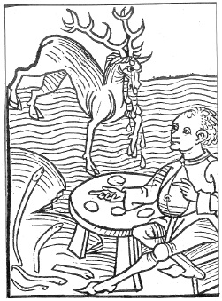

ŞEKİL 31. Bir Avrupa Ortaçağ inanışına göre, erkek geyikler, kuvvetlenmek için zehirli yılanları yerler ve hastalanırlardı. Kısa süren bu hastalık sırasında gözlerinden akan yaşlar donarak katılaşıp yere dökülür ve bu taşlar panzehir olarak kullanılırdı. Resimde yukarıda geyik ve sol altta engerekler görülmektedir (Jacob Meydenbach, Hortus sanitatis, Mainz, 1491).45
Ortaçağ Avrupa’sında kolloitsel bir altın çözeltisi olan “aurum potabile” (“içilebilir altın”), cüzama karşı geliştirilmiş olan ve eczacıların çok kullandığı bir ilaç olup zeytinyağı ile asidik altın klorür çözeltisi karışımından ibaretti. Ölümsüzlüğün simgesi olan metalik altın bile, günümüzde zengin Hintliler ya da petrol zengini Araplar tarafından, pişen yemek ve hamur tatlısı üzerine çok ince varak (yaprak) halinde konmuş olarak yemekle birlikte yenmektedir.
15. ve 16. yüzyıllarda baharat ile ecza arasında ayrım yapılmaya başlandı. Baharat, beslenme için vazgeçilmez nitelikli katkılar, eczalar ise ilaç yapımında kullanılan müstahzarlar ve hammaddelerdi. Ancak benzer bir ayrım, baharatçı ile eczacı arasında yoktu. Bunların her ikisi de ayrım yapmadan baharat ve ecza satmakta ve birbirlerine mal sağlamaktaydılar. Ama bütün baharatçılar da ilaç satıcısı değildi. Basit müstahzarlar baharatçılar tarafından satılabilirken karışım halindeki ilaçlar yalnızca eczacıların alanına girmekteydi. Buna göre tıbbî bir amaçla yapılan karıştırma, dönüştürme ve hazırlama işleri, yalnızca eczacılar tarafından yapılmaktaydı.59
Paracelsus’un etkisi ölümünden sonra daha da artmış, izleyicileri 16. yüzyılın ikinci yarısı ve 17. yüzyıl boyunca ilaç hazırlama konusunda etkili olmuşlardır. Bunlar arasında eczacı Adam von Bodenstein (1528-1577), simyacı Gerhard Dorn (Gerardus Dorneus) (~1530-1584), iyatrokimyacı Joseph Duchesne (Josephus Quercetanus) (1544-1609), botanikçi Petrus Severinus (1580-1656), hekim ve simyacı Andreas Libavius (Andreas Libau) (1540-1616) ve hekim ve eczacı Nicholas Culpeper (1616-1654) gibiler bulunmaktaydı.60
Joseph Duchesne’nin (1564-1609) farmasötik konulu eserine dayanarak Johannes Christian Schröder (1600-1664), 1641 yılında Ulm’da Latince olarak Pharmacopoeia medico-chymica (Tıbbî-Kimyasal Farmakope) adlı eserini yayımlamış ve eser, ülke içinde ve dışında son derece büyük bir başarı kazanmıştır. Schröder, o dönemin devrimci kişiliği olan İsviçreli hekim ve simyacı Paracelsus’un sadık bir izleyicisi idi. Bunu izleyen yüz yıl içinde eserin, 20’nin üzerinde Latince, Almanca, İngilizce ve Fransızca baskısı yapılmış, Almanca baskısı Vollständige und Nutzreiche Apotheke (Eksiksiz ve Yararlı Eczane) başlığı ile 1693 yılında Nürnberg’de yayımlanmıştır (ŞEKİL 32). Eser, hekim Yaşlı Friedrich Hoffmann (1626-1675) tarafından titiz bir şekilde yeniden değerlendirilmiştir. René Dèscartes’tan (1596-1650) ve Jan Baptista van Helmont’tan (1577-1644) eğitim almış olan Hoffmann, eserdeki “eskimiş” görüşleri ortadan kaldırmışsa da kimi boşinanca dayalı ve bilimsel olmayan görüşlerin yer almasını önleyememiştir. Böyle konular arasında, astroloji ve tıp, “işaretler” (benzerlik) öğretisi, değerli taşlarla tedavi, Arapların şifalı otlarla tedavi yöntemleri, büyücülük ve sihirbazlık gibileri yer alıyordu. Örnek olarak 15. yüzyıl sonunda frengi hastalığı ortaya çıktığında bunun nedeni, dinbilimcilerce Tanrı’nın bir cezası ya da Arap tıbbına bağlı hekimlerce yıldızların etkisi olarak yorumlanmış; tedavi konusunda ise ilkin hiçbir başarı sağlamayan hacamat, tiryak, panzehirtaşı gibi alışılmış araçlar, daha sonra da kimyasal (civalı preparatlar) ve egzotik araçlar (guayak ağacı odunu, saparna kökü) kullanılmıştır. İyatrokimyanın (tıbbî kimya) öncüsü olan Paracelsus, frengi tedavisinde başkaca kimyasal maddeler arasında arsenik de kullanmıştır. Çağdaş bir okur, toz haline getirilmiş değerli taşların çok yönlü tedavi amacıyla kullanılmış olmasından şaşkınlık duyabilir. Bu konuyu inceleyen eleştirmenler, Van Helmont tarafından hazırlanmış olan değerli taş tozlarının, beden tarafından emilemeyeceğini belirtmişlerdir.14